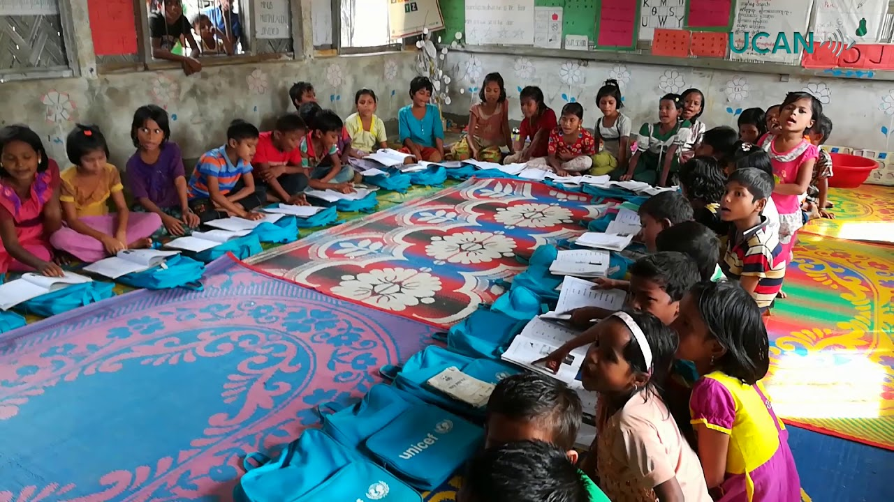

The Ahmed-Khan country dashboard allows you to explore the most up-to-date coutry data using an interactive data visualization tool.
The visualization is created using yearly World Bank data starting in 1990 to 2018. The dataset consists of 193 countries across 6 continents.
Below you will find additional information on the theory and context behind some of the key topics highlighted in the visualization.
Key Terms
GDP - Gross Domestic Product
Gross Domestic Product (GDP) is the total monetary or market value of all the finished goods and services produced within a country's borders in a specific time period. As a broad measure of overall domestic production, it functions as a comprehensive scorecard of the country’s economic health.
GDP is calculated mainly via three different approach among which the expenditure approach or spending approach is the most popular. This method calculates the spending by the different groups that participate in the economy. This approach can be calculated using the following formula: GDP = C + G + I + NX, or (consumption + government spending + investment + net exports). All these activities contribute to the GDP of a country. The U.S. GDP is primarily measured based on the expenditure approach.
GDP per Capita
GDP per capita is a measure of a country's economic output that accounts for its number of people. It divides the country's gross domestic product by its total population. That makes it a good measurement of a country's standard of living. It tells you how prosperous a country feels to each of its citizens.
PPP - Purchasing Power Parity
One popular macroeconomic analysis metric to compare economic productivity and standards of living between countries is purchasing power parity (PPP). PPP is an economic theory that compares different countries' currencies through a "basket of goods" approach.
According to this concept, two currencies are in equilibrium—known as the currencies being at par—when a basket of goods is priced the same in both countries, taking into account the exchange rates.
Urbanization
For most of human history, most people across the world lived in small communities. Over the past few centuries – and particularly in recent decades – this has shifted dramatically. There has been a mass migration of populations from rural to urban areas.
Across most high-income countries – across Western Europe, the Americas, Australia, Japan and the Middle East – more than 80% of the population live in urban areas. Across most upper-middle income countries – in Eastern Europe, East Asia, North and Southern Africa, and South America – between 50% to 80% of people do. In many low to lower-middle income countries, the majority still live in rural areas.
The allocation and distribution of resources — ranging from housing and transport access to healthcare, education, and employment opportunities — should all be dependent on where people live. Understanding the distribution of people in a given country is essential to make sure the appropriate resources and services are available where they’re needed.
Literacy
Literacy is a key skill and a key measure of a population’s education.
From a historical perspective, literacy levels for the world population have risen drastically in the last couple of centuries. While only 12% of the people in the world could read and write in 1820, today the share has reversed: only 14% of the world population, in 2016, remained illiterate. Over the last 65 years the global literacy rate increased by 4% every 5 years – from 42% in 1960 to 86% in 2015
Despite large improvements in the expansion of basic education, and the continuous reduction of education inequalities, there are substantial challenges ahead. The poorest countries in the world, where basic education is most likely to be a binding constraint for development, still have very large segments of the population who are illiterate. In Niger, for example, the literacy rate of the youth (15-24 years) is only 36.5%.

Women Employment
Rising female labor force participation has been one of the most remarkable economic developments of the last century.
The 20th century saw a radical increase in the number of women participating in labor markets across early-industrialized countries. The substantial and sustained increases in the labor force participation of women in rich countries remains a striking feature of economic and social change in the 20th century. In the majority of countries, across all income levels the participation of women in labor markets is today higher than three decades ago.
Despite recent growth in female participation rates, men still tend to participate in labor markets more frequently than women. Since men tend to participate in labor markets more frequently than women, the gender composition of the labor force is skewed in most countries.